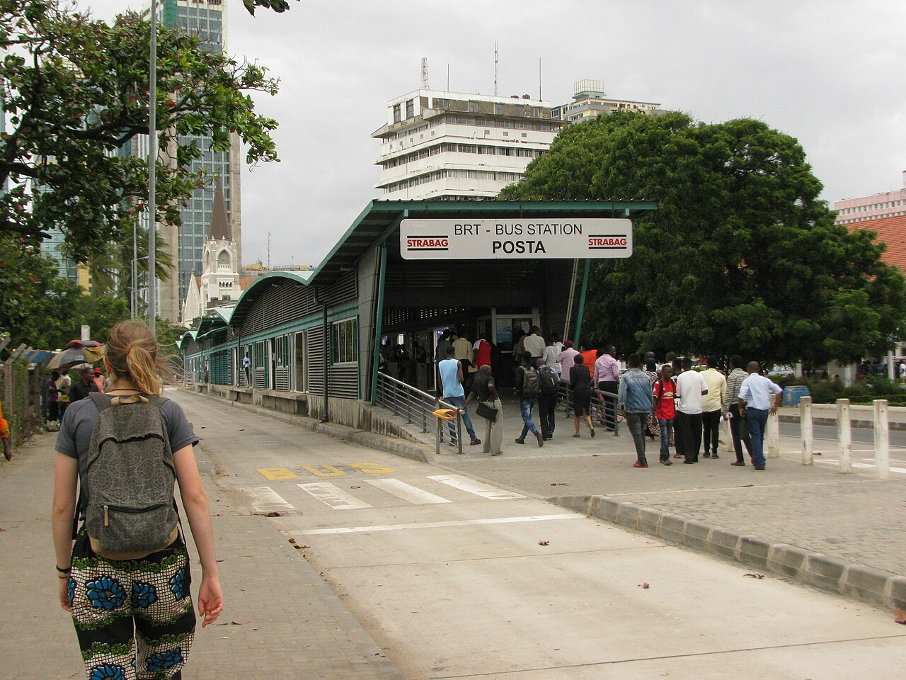

Bus Rapid Transit Operations and Safety
- Operational evaluation of the bus rapid transit system: Case study of Dar es Salaam city
2022 · Journal article · Journal of Public Transportation
 TALISTransportation Analytics, Learning
TALISTransportation Analytics, LearningDr. Angela Kitali’s research group
Studying how network structure, service design and operational coordination determine reliability, connectivity and access across modes and communities.
Mobility depends on how individual facilities and services function as a connected system. We study the relationships among network structure, operating strategies, service performance and the destinations people can reach. The agenda spans coordination across modes and scales, the effects of uncertainty and disruption, and the design of services for communities with different travel needs and institutional capacities.
Our research on transportation operations examines travel-time variability, network connections and access to services. In Dar es Salaam, Bayesian hierarchical models compare travel times across BRT, conventional buses and private cars. Related studies examine bicycle–transit routing, barriers to rural walking and cycling, and neighborhood profiles near potential passenger-ferry connections.
We ask how infrastructure, service patterns and operational decisions jointly determine the journeys people can complete. Long-term interests include coordination across modes and geographic scales, reliability under uncertainty and disruption, and the evaluation of new services within existing transportation networks.
Travel-time and incident-clearance studies motivate an interest in forecasts that describe the probability of substantial delay, rather than only an expected duration. Research questions concern the reliability of these probabilities across corridors, their updating as observations arrive, and the consequences for transfers and service access. Automated, shared and electric services provide additional settings for examining these questions.
Ongoing; scheduled completion February 2027
